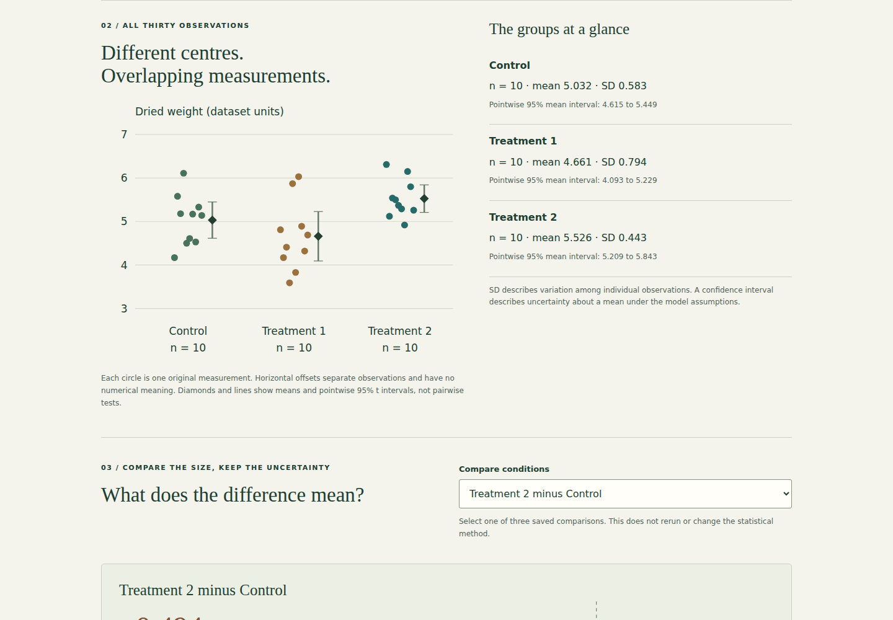
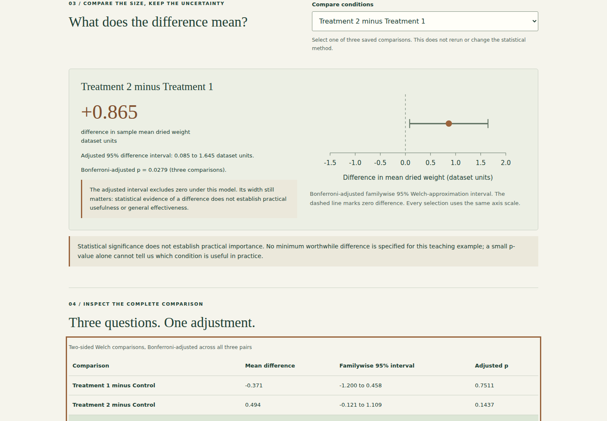

Plant growth & statistics.
Explore every measurement, compare the size of group differences and keep statistical uncertainty visible.
Public demo: browser-based static version. See source for architecture and limitations.

What I built
Added an accessible comparison lab to the reproducible PlantGrowth investigation. Every observed value, mean, sample SD and adjusted comparison comes from the same computation as the preserved figures.
Why it matters
Differences in averages can be misleading without considering variability. This project shows how visual evidence and statistical testing support a careful comparison.
How it works
- 01
Inspect all thirty original measurements, three group summaries and pointwise mean intervals; exact source rows remain available in a table and CSV.
- 02
Select one of three saved Welch comparisons to inspect its raw mean difference, adjusted interval and adjusted p-value on a consistent axis.
- 03
Distinguish individual variability, uncertainty and practical importance without changing the method or inferring general treatment effectiveness.
The technical challenge
A mean difference, individual variation and uncertainty describe different things. The lab keeps all observations visible and separates pointwise mean intervals from adjusted pairwise intervals. One computation supplies the figures, numerical summaries and interface, with an independent API reconciliation to catch drift. The interpretation explains why a statistically supported difference need not be practically useful.
What it demonstrates
Reproducible statistics, raw-unit effect interpretation, uncertainty communication, source-data integrity and accessible data visualisation.
Evidence, with context.
Thirty source observations, ten per group. Sample means: control 5.032, treatment 1 4.661, treatment 2 5.526 (dataset units). Primary Welch omnibus p=0.0174; classic ANOVA p=0.0159 is a sensitivity analysis. All three Welch comparisons use Bonferroni adjustment. Treatment 2 minus Treatment 1: +0.865 dataset units, adjusted 95% interval 0.085 to 1.645, adjusted p=0.0279. The explorer preserves all measurements and methods. No practical-benefit threshold or general treatment effectiveness is established.
Verified source: f8135c9dd305 · Tests and visual capture ↗




Scope and limitations
Thirty observations in a teaching dataset do not establish universal treatment effectiveness. Independence and the original experimental design cannot be verified from the CSV alone. Mean intervals assume approximate normality; Welch inference is a small-sample approximation. A p-value is neither an effect size nor the probability that the null hypothesis is true. Methods were selected for this educational investigation, not preregistered confirmatory analysis.
Visual provenance and source attribution are recorded in the evidence register ↗.
Under the surface.
Architecture, methods and improvements
The same in-memory observations, group summaries and Welch/Bonferroni results feed the original Matplotlib figures and the browser export. The build checks exact dataset bytes and attaches the source revision. Six Python regressions preserve reproducibility, independently reconcile classic F, verify every source row and sample SD, and compare adjusted pair intervals/degrees of freedom with the SciPy confidence-interval API. Three browser journeys check all pairs, exact rendered numbers, source table values, keyboard selection, desktop/mobile layout and loading failure. Methods are fixed; selecting a control only reads saved results.
Try it locally
Install requirements.txt, run python analyze_plants.py, python -m unittest discover -p "test_*.py" -v and python build_explorer.py. Serve docs/ with a local static server. npm ci and npm run test:browser run repeatable desktop/mobile checks. Original CSV, saved calculations and coursework remain available.
The portfolio is a static GitHub Pages site. Server applications run locally; the portfolio does not collect bookings, credentials or payments.